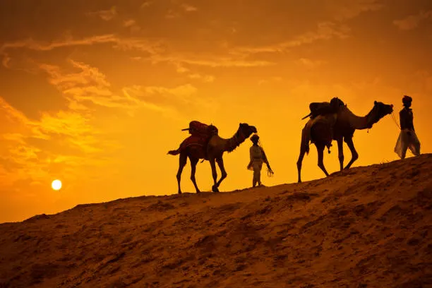

Places to visit
Rajasthan has various visitor attractions including within the city.
Rajasthan

Jaipur-The Pink City
JaipurJaipur, also known as the Pink City, is a vibrant and historical city in the state of Rajasthan, India. Known for its stunning palaces, colourful bazaars, and rich cultural heritage, Jaipur is a popular destination for tourists from around the world. The city gets its nickname from the pink-hued buildings in the old part of town, which were painted this colour to welcome the Prince of Wales in 1876. Visitors to Jaipur can explore attractions such as the majestic Amber Fort, the City Palace, and the Hawa Mahal, or simply soak in the bustling atmosphere of the markets and streets. With its rich history, vibrant culture, and stunning architecture, Jaipur is counted among the top best places to visit in Rajasthan.
Udaipur
UdaipurUdaipur, also known as the “City of Lakes,” is a popular tourist destination in the state of Rajasthan, India. It is famous for its stunning architecture, picturesque lakes, and rich cultural heritage. Visitors to Udaipur can explore the magnificent City Palace, take a boat ride on Lake Pichola, wander around the old town markets, and marvel at the intricate carvings of the Jagdish Temple. With its royal palaces, beautiful gardens, and romantic atmosphere, Udaipur is a must-visit destination for anyone looking to experience the magic of India.

Jodhpur
JodhpurJodhpur, also known as the “Blue City” due to its blue-painted houses, is a popular tourist destination in the Indian state of Rajasthan. The city is home to majestic forts like Mehrangarh Fort and beautiful palaces like Umaid Bhawan Palace, offering visitors a glimpse into the rich history and culture of the region. Visitors can explore the vibrant markets, taste delicious Rajasthani cuisine, and witness traditional folk performances. Jodhpur is a must-visit destination for those looking to immerse themselves in the colours and flavours of Rajasthan.
Jaisalmer
JaisalmerJaisalmer is a beautiful city located in the state of Rajasthan, India. Known for its stunning architecture, vibrant culture, and picturesque desert landscapes, visiting Jaisalmer is truly a magical experience. From exploring the magnificent Jaisalmer Fort to taking a camel safari in the Thar Desert, there is no shortage of things to see and do in this enchanting city. Whether you are wandering through the narrow alleyways of the old town or marvelling at the intricate carvings of the Patwon Ki Haveli, Jaisalmer offers a unique and unforgettable travel experience. Don’t forget to sample the delicious local cuisine and shop for traditional Rajasthani handicrafts at the bustling markets. A trip to Jaisalmer is sure to leave you with memories that will last a lifetime.
Ajmer
AjmerAjmer is a historic city located in the state of Rajasthan, India. It is famous for the Ajmer Sharif Dargah, which is the shrine of Sufi saint Khwaja Moinuddin Chishti. Visiting Ajmer allows travellers to experience the rich cultural and religious heritage of the city, as well as explore the beautiful architecture and vibrant markets. Some popular attractions to visit in Ajmer include the Ana Sagar Lake, Taragarh Fort, and the Akbari Fort and Museum. Overall, a visit to Ajmer offers a unique and memorable experience for tourists looking to immerse themselves in the history and charm of Rajasthan.
Pushkar
PushkarPushkar is a holy town located in the state of Rajasthan, India. It is known for its beautiful temples, especially the Brahma Temple which is one of the few temples in the world dedicated to Lord Brahma. Pushkar is also famous for its annual camel fair, where traders and tourists from all over the world come to buy and sell camels. The town has a vibrant and colourful atmosphere, with bustling markets, street vendors selling trinkets and handicrafts, and a peaceful lake where visitors can take a dip in the holy waters. Visiting Pushkar is a unique and spiritual experience that allows travellers to immerse themselves in the rich culture and history of India. Pushkar is also counted among the top best places to visit in Rajasthan.
Ranthambore National Park
Ranthambore National ParkRanthambore National Park, located in Rajasthan, is one of the largest and most famous national parks in the country. Known for its population of tigers, visitors can take safari tours to try and spot these majestic animals in their natural habitat. In addition to tigers, the park is home to a variety of other wildlife such as leopards, sloth bears, and a wide array of bird species. The park also features historical attractions such as the Ranthambore Fort, which dates back to the 10th century. A visit to Ranthambore National Park offers a unique opportunity to experience the beauty of nature and witness some of India’s most iconic wildlife species.
Mount Abu
Mount AbuMount Abu is a picturesque hill station located in the state of Rajasthan, India. Known for its stunning natural beauty and cool climate, Mount Abu is a popular destination for tourists looking to escape the heat of the plains. The town is home to several unique attractions, such as the Dilwara Temples, Nakki Lake, and the Achalgarh Fort. Visitors can also enjoy scenic viewpoints, picturesque hiking trails, and a tranquil atmosphere away from the hustle and bustle of city life. Whether you’re looking to explore ancient temples, go boating on the lake, or simply relax amidst the serene surroundings, a visit to Mount Abu is sure to be a memorable experience.
Bikaner
BikanerBikaner is a beautiful city located in the state of Rajasthan, India. Known for its rich history and stunning architecture, Bikaner is a popular destination for both domestic and international tourists. Some of the must-visit attractions in Bikaner include the Junagarh Fort, Karni Mata Temple (also known as the Rat Temple), and the National Research Centre on Camel. Visitors can also enjoy tasting the local cuisine, shopping for traditional handicrafts, and experiencing the vibrant culture of the city. Overall, a trip to Bikaner promises a memorable and enriching experience for any traveller.
Bharatpur
BharatpurBharatpur, located in the state of Rajasthan, is a popular tourist destination known for its rich history and stunning natural beauty. One of the main attractions in Bharatpur is the Keoladeo National Park, a UNESCO World Heritage site, which is home to a wide variety of bird species and other wildlife. Visitors can enjoy bird watching, wildlife safaris, and exploring the lush greenery of the park. In addition to the national park, Bharatpur also has many historical sites and monuments that offer a glimpse into the region’s past. Overall, visiting Bharatpur is a must for nature lovers and history enthusiasts alike.